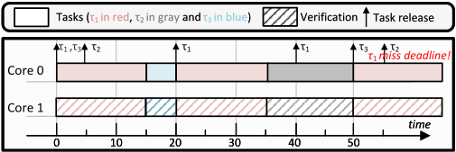
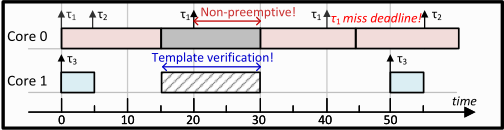
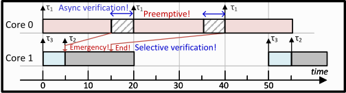
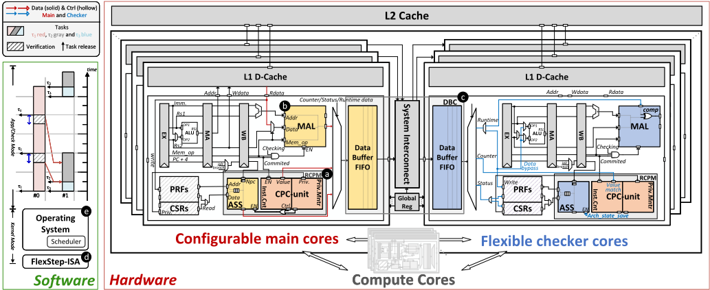
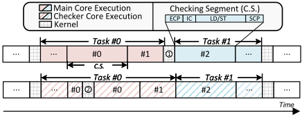
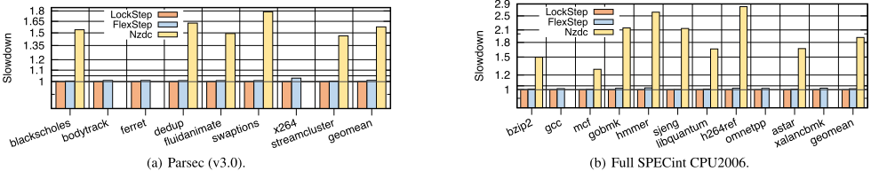
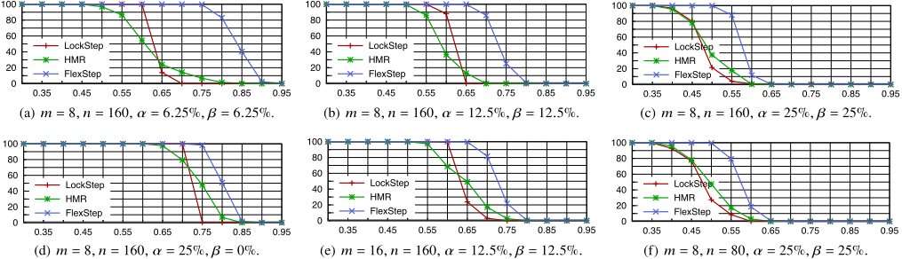
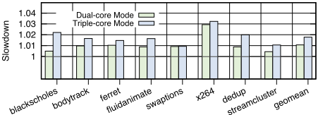
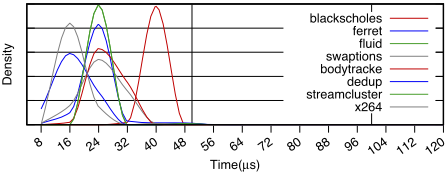
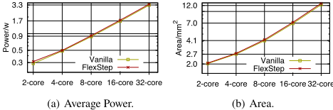

FlexStep：面向多核/众核实时系统的灵活错误检测机制
安全关键系统中传统 LockStep 将主核与校验核静态绑定并逐周期同步执行，导致资源过度配置与实时性下降；HMR 虽支持 split-lock 重配置，仍受核绑定、同步检测、不可抢占和静态检测对象限制。FlexStep 提出软硬件全栈协同方案：微架构层为每个核增加 RCPM（寄存器检查点管理）、MAL（访存日志）与 DBC（数据缓冲与通道）单元，将线程切分为检查段，校验核可在任意其他核上基于 SCP/ECP 与访存日志异步重放校验；配合定制 ISA 与 OS 调度扩展，实现动态核属性配置及可选择、可抢占的错误检测，调度上采用带虚拟 deadline 的 partitioned EDF 支持双检/三检任务。基于 AMD Alveo U280 FPGA（Rocket 核、Chipyard/FireSim、TSMC 28nm 综合）的评估显示：双核校验模式性能下降仅 1.07%（Parsec geomean），面积/功耗开销分别为 2.21%/2.89%，检测延迟大多不超过 50μs，可调度性显著优于 LockStep 与 HMR。
在汽车、航空电子等安全关键系统中，任务可靠性需求异构并共享多核处理器，传统 LockStep 强制所有任务接受最高级别同步检测，造成算力、功耗浪费与 deadline miss；现有可重配置方案（如 HMR）仍存在核绑定、同步检测不可抢占、只能对预确定任务做静态检测等限制。论文要解决的问题是：在保证可靠性与实时可调度性的前提下，实现异步、可选择、可被非校验任务抢占的灵活错误检测。
软硬件全栈协同设计：(1) 微架构层为每个核加入 RCPM（CPC 检查点控制 + ASS 架构状态快照）、MAL（按序记录 LD/ST/LR/SC/AMO 访存数据与地址）和 DBC（SRAM FIFO 缓冲 + 全连接 MUX-DEMUX 系统互连），主核按特权级切换或指令数上限（默认 5000）生成检查段，校验核初始化到 SCP 后重放并与 ECP 及访存日志比对；(2) 定制 ISA 分为主核（M.x）、校验核（C.x）与全局（G.x）三类指令，抽象硬件控制接口；(3) OS 内核在上下文切换中少量扩展代码并设计专用 checker thread，运行时动态配置核属性与一对一/一对二等校验模式；(4) 提出 partitioned EDF 下为校验任务设置虚拟 deadline（双检 D/2、三检 (√2−1)D）的任务划分算法与可调度性分析。以开源 Rocket 核为案例实现。
双核校验模式下 Parsec 与 SPECint 的 geomean 性能下降分别为 1.07% 与 1.24%，三核模式为 1.77%；对比开源软件方案 Nzdc（Parsec 57.7%、SPEC 91.5% 下降）优势显著
4 核 SoC 面积 2.77 mm²、功耗 0.499W，相对 Vanilla 开销仅 2.21% 与 2.89%；每核额外存储开销 1614 字节（CPC 8B、ASS 518B、DBC 1088B）
错误检测延迟大多集中在约 20μs，最大约 50μs（blackscholes），论文声称足以覆盖 99.9% 以上硬件故障；每 workload 随机注入 5000-10000 个故障、共超 10 万采样点
随机生成任务集的数值仿真显示，FlexStep 可调度任务集比例在各配置（核数、任务数、双检/三检占比、利用率）下持续优于 LockStep 与 HMR，高利用率与校验任务较少场景改善更明显
核数从 2 扩展到 32，FlexStep 相对 Vanilla 的平均功耗与面积增长近线性，表现出良好可扩展性
原型基于 AMD Alveo U280 FPGA（FireSim）、Rocket 核、Chipyard v1.8.0、TSMC 28nm（Synopsys v2019.12 综合），运行 Linux v5.7 并执行完整 SPECint 06 与 Parsec V3（simmedium）
与 LockStep/HMR 等核绑定式方案不同，FlexStep 解耦主核与校验核的静态绑定，支持任意核间异步、可选择、可被非校验任务抢占的线程级错误检测，并通过定制 ISA 与 OS 调度层整合为全栈框架；调度侧提出基于虚拟 deadline 的异步校验 partitioned EDF 划分与可调度性分析。与软件检测方案（Nzdc）相比，以约 1% 的性能开销获得硬件级检测能力，同时面积/功耗开销远低于为每个任务固定配备校验核的 LockStep。
相关度级别：medium
命中能力域：2.5 功能安全与安全机制
理由：论文核心是面向安全关键多核处理器的错误检测安全机制的设计与验证，与团队 2.5 域（安全机制设计与验证、safety verification、failure mode 建模）在概念与方法层面相关：其异步/可选择/可抢占检测的思想，以及通过大规模随机故障注入统计检测延迟分布来论证检测能力的实验方法，对 IP 级安全机制的检测延迟与覆盖论证具有方法论借鉴价值。但论文技术落在 CPU 核微架构、定制 ISA 与 OS 调度层，而团队产品为 LPDDR/HBM4/UCie 等存储与互连 IP，不涉及处理器核与 OS 开发，因此不直接命中 2.5 域核心技术，判定为 medium。其故障注入属架构级检测延迟评估，与 2.6 域基于功能 pattern 的门级 fault grading/TFMEA 论证方法不同，故不列为匹配域。
建议动作：作为方法参考存档
arXiv:2503.13848v1 [cs.AR] 2025年3月18日
FlexStep：在多核/众核实时系统中实现灵活的错误检测
Tinglue Wang †、Yiming Li †、Wei Tang †、Jiapeng Guan ‡、Zhenghui Guo †、Renshuang Jiang §、Ran Wei ¶∗、Jing Li ∥∗、Zhe Jiang †∗
† 东南大学，中国。‡ 大连理工大学，中国。§ 国防科技大学，中国。
¶ 兰卡斯特大学，英国。∥ 新泽西理工学院，美国。
摘要——安全关键系统中的可靠性与实时响应能力传统上依靠错误检测机制来实现，例如锁步（LockStep），这类机制需要预先配置的校验核、主核与校验核之间的严格同步、静态的错误检测区域，或仅具备有限的抢占能力。然而，这些与核绑定的硬件机制往往导致严重的资源过度配置，并削弱实时响应能力，尤其是在现代系统中——为了提高效率、降低成本和节省功耗，具有不同可靠性需求的任务被整合到共享处理器上运行。为应对这些挑战，本工作提出了 FlexStep，这是一种在片上系统（SoC）、指令集架构（ISA）和操作系统（OS）调度层之间集成软硬件的系统性解决方案。FlexStep 具有一种新颖的微体系结构，支持动态核配置以及异步、可抢占的错误检测。FlexStep 架构天然支持灵活的任务调度与错误检测，使新的调度算法成为可能，从而同时提升资源效率与实时可调度性。我们公开发布了 FlexStep 的源代码，地址为 https://anonymous.4open.science/r/FlexStep-DAC25-7B0C。
在汽车和航空电子等安全关键系统中，处理器核是确保系统可靠运行的基础组件。这些核必须能够在任务执行期间检测并纠正故障 [1]-[5]，同时还要保证任务的可调度性 [6]-[10]。然而，由于可靠性与可调度性针对的是不同的安全维度，它们通常是在处理器与系统开发的不同阶段、跨越不同的体系结构层次来实现的。可靠性通常通过硬件级错误检测机制来保证，例如 ARM Cortex R 系列处理器中使用的锁步（LockStep）技术 [11]-[16]。虽然也存在软件容错机制 [17]-[20]，但其覆盖范围有限，并会导致显著的性能下降。相反，可调度性则是通过在操作系统（OS）中实现的调度算法来保证的 [21]-[23]。
现有工作。随着硬件计算能力的提升和软件应用多样性的扩展，在共享的处理器核上执行具有不同可靠性需求的多个任务的需求日益增长 [24]-[29]。在这种背景下，传统的锁步技术由于其僵化的硬件设计而面临显著的局限。锁步将一个或多个相同的核静态绑定在一起，同步执行相同的程序，并在每个时钟周期比较输出结果。这种设计强制要求所有运行在锁步核上的任务都接受最高级别的错误检测，而不论其实际的可靠性需求如何。因此，这种方法导致错误检测能力的利用效率低下、资源利用率欠佳、显著的功耗与面积开销，以及系统可调度性方面的挑战。如图 1(a) 所示，在锁步僵化的错误检测机制下，即使是 𝜏 1 和 𝜏 3 这类无需验证的任务也仍要接受错误检查，不必要地消耗计算资源与功耗。这最终导致 𝜏 1 的第三个作业错过其截止期。
∗ 表示通讯作者。电子邮箱：r.wei5@lancaster.ac.uk、jingli@njit.edu 和 zhejiang.uk@gmail.com。



此外，为减少僵化的错误检测所带来的硬件资源开销，研究者还开发了一些支持重构的方法，例如结合 split-lock 的锁步（LockStep）[30]-[33]。例如，最新的混合模块冗余（HMR）方法 [30] 显式地将任务关键与性能关键的代码段分离开来。它利用硬件体系结构设计来支持运行时针对 split-lock 的重构，从而提供了一定程度的灵活性。然而，“核绑定”（core binding）设计的固有局限性仍然带来了显著约束。具体而言，当重构进入校验模式时，校验核必须与主核同步地执行错误检测。此外，这种同步的错误检查执行不能被非校验任务抢占，即使这些任务具有更高的优先级或更早的截止期。另外，HMR 只能静态地为预先确定的任务执行错误检查，缺乏根据动态系统需求提供选择性错误检查的能力。这些约束显著降低了灵活性，并对可调度性产生负面影响。如图 1(b) 所示，尽管采用运行时 split-lock 的 HMR

通过不对非校验任务 𝜏 1 和 𝜏 3 执行错误检查（𝜏 3 可在核 1 上执行）而减少了资源浪费，但“核绑定”设计仍然阻止 𝜏 1 抢占 𝜏 2 的错误检查，导致 𝜏 1 错过其第二个截止期。
贡献。为了在保持资源效率的同时为安全关键系统提供可靠性保障与可调度性保证，开发一种更灵活的硬件错误检测架构已成为业界的必然需求 [33]-[36]。如图 1(c) 所示，这样的架构应将核从僵化的锁步配置中解耦出来，并采用一种灵活的错误检测机制。在操作系统（OS）的支持下，该机制应能实现异步的、可选择性的、且可被非校验任务抢占的错误检测。然而，实现这种程度的灵活性与效率带来了重大的技术挑战。
为了应对这些挑战，我们提出了 FlexStep，一个集成硬件与软件、可提供高度灵活性与可配置性的综合性全栈框架。它实现了一种新颖的可配置微体系结构，支持在任意核之间进行异步的、线程级的错误检测。该方法克服了同步的、核绑定式方法的局限性，实现了更灵活的错误检测。我们还引入了额外的 OS 层控制，以管理具有不同可靠性需求的任务，从而确保无缝且高效的任务调度。具体而言，我们的贡献如下：
我们在 AMD Alveo U280 FPGA 上实现了 FlexStep，并使用多种指标对其进行了评估。结果表明，FlexStep 在实现微秒级检测延迟的同时，仅带来 1.07% 的性能下降、2.21% 的面积开销和 2.89% 的功耗开销，并且与 LockStep 和 HMR 相比显著提升了可调度性。
In FlexStep, any processor core can be configured as either a main core or a checker core. The main core executes software programs like a standard application core, while the checker core verifies the correctness of the main core through a second run of the same program. Fig. 2 illustrates the FlexStep framework.
Unlike the synchronised verification in LockStep, FlexStep employs error detection based on Register Checkpoints (RCPs) - architectural states captured at specific points - and memory accesses, similar to Paramedic [38]-[40]. Specifically, a user thread running on the main core is divided into small checking segments , which can be reproduced on its associated checker core(s). Each segment is identified by Start Register Checkpoints ( SCPs ) and End Register Checkpoints ( ECPs ) stored in the Register Checkpoint Management units (Fig. 2. a , Sec. III-A). The checker core halts memory access and sequentially replays the checking segments. Before executing a checking segment, it initialises its architectural state to the segment's SCP and compares its final state to the ECP after execution. During execution, memory access data (e.g., addresses and data for LD/ST , LR/SC , AMO instructions) recorded in the Memory Access Log (Fig. 2. b , Sec. III-B) are used for replay execution and verified at runtime. The program execution on the main core is deemed correct if the ECPs of all checking segments and memory access data match the original execution.
The fundamental idea is that, as long as all data related to Register Checkpoints and memory accesses performed by the thread - required for reproducing execution and verification - are recorded and buffered temporarily, the checker thread can be executed asynchronously on any other core in the system. Therefore, a checker core can execute other tasks instead of immediately starting verification, as long as the necessary data of the verification task have been extracted and buffered fromthe main core. This design improves both utilisation and flexibility.
| Instruction | Description |
|---|---|
| G.IDs.contain | Return core attributes (Main/Checker) |
| G.Configure | Configure the main and checker cores'ID |
| M.associate | Allocate one or multiple checker core(s) to main |
| M.check | Enable/Disable the checking function |
| C.check state | Switch the checking state (busy/idle) |
| C.record | Record the context to ASS |
| C.apply | Apply the SCP from data channel |
| C.jal | Jump to the next pc (npc) of SCP |
| C.result | Return the comparison result |
| Instruction | Description |
FlexStep allows user threads running on any core to be duplicated and verified on different core(s) using a data buffer and a configurable interconnected channel (Fig. 2. c , Sec. III-C). Unlike LockStep and HMR, which supports specific verification modes such as Dual-Core LockStep (DCLS) and Triple-Core LockStep (TCLS) by binding cores via a shared input path for instructions, data, and control, FlexStep's interconnected channel can be configured to operate in one-to-one (similar to DCLS), one-to-two (similar to TCLS), or more modes. This accommodates task scenarios with varying safety-criticality demands.
为了管理各核并调度系统内的错误检测，FlexStep 将底层可配置的硬件控制接口抽象为一套定制化的指令集架构（ISA）（图 2.d、表 I），并引入了集成到操作系统（OS）层的控制流。该 ISA 定义了专用于主核或校验核的指令，以及两者通用的全局指令。这一设计使所有核属性（主核、校验核或计算核）对 OS 可见，从而允许在运行时对其进行动态配置，以便于 OS 调度（图 2.e）。该设计支持抢占式执行，允许任意核在任何时刻被中断，从而使更紧急的任务得以执行并满足其截止期限。因此，OS 可以根据需要动态配置核属性与验证模式，利用异步验证和任务抢占来优化实时调度，同时确保系统可靠性。
要在硬件层面实现 FlexStep，需要对微体系结构进行修改，加入若干关键功能单元，如图 2 所示。作为演示，我们以 Rocket 核为案例研究来实现我们的框架并评估其有效性。需要注意的是，为了实现主核与校验核属性之间的动态切换，在每个核中集成相同的功能单元是必不可少的。然而，这一要求对处理器可用于扩展的面积造成了限制。为解决这一问题，具有不同属性的核必须最大限度地复用功能单元，以提高利用率并最小化面积开销。本节将讨论修改后微体系结构的技术细节。
寄存器检查点管理单元（RCPM，图 2.a）由检查点控制（CPC）单元和体系结构状态快照（ASS）单元组成。CPC 控制检查段的开始与结束。在校验核中，CPC 识别段边界并检查执行的正确性。ASS 是一个存储单元，用于捕获寄存器检查点快照，并在 CPC 的控制下将其释放，以供传输或应用。
检查点控制（CPC）包含一个指令计数器（图 2.Inst.Cnt）和一个特权级模式监视器（图 2.Priv.Mntr）。FlexStep 架构仅支持用户态检查，而所有核在执行过程中都可能进入内核态，从而导致检查段被提前终止（图 3.1）和出现暂时偏离（图 3.2）。因此，精确统计主核与校验核在用户态下执行的指令数量至关重要，以确保二者执行相同长度的检查段。

CPC 的工作机制。对于主核，在以下条件下会生成新的检查点：a) 发生特权级模式切换；b) 达到指令数上限（默认为 5000）。在 ECP 处，计数器停止计数，并记录整个检查段的指令数。在整个检查段期间，主核按顺序发送 SCP、LD/ST 日志、指令数（IC）和 ECP（图 3），供校验核接收。对于校验核，在应用 SCP 后即开始检查，直到指令数达到与主核相同的值；随后，它使用自身的体系结构状态来验证 ECP。
体系结构状态快照（ASS）负责临时存储寄存器检查点和通用体系结构状态，以便于重复执行和快速的执行状态切换。在主核发送 SCP 和 ECP 之前，ASS 先将其临时存储，并整理成适合校验核接收的格式后再进行转发。在校验核中，校验线程在进入实际的重复执行之前，会将体系结构状态存储在 ASS 中而非主存中，从而在到达 ECP 时能够快速提取该状态，并及时返回取回待处理的 SCP。
对于主核而言，在检查段期间，重复执行和验证所需的信息都需要按顺序记录并传输。MAL（图 2.b）识别访存指令，在译码阶段记录其数据和地址，并以流水方式将其传递到提交阶段；若提交有效，则在该阶段对其进行打包。它确保数据包在进入数据通道时遵循指令提交的顺序。对于校验核而言，MAL 在重复执行期间监控访存操作，并以相同的方式记录需要验证的信息。当指令提交时，将记录的信息与从主核取回的信息进行比较，并报告比较结果。
处理具有多个微操作的访存指令。对于常规的 LD/ST 指令，日志单元将其打包为单个表项。然而，对于具有多个访存微操作的指令（LR、SC 和 AMO），相关数据会被打包成多个表项，以最小化数据宽度。这需要对校验核中此类指令的处理进行少量修改，并会引入额外的延迟。尽管如此，数据格式的简化和存储开销的降低所带来的收益大于这些缺点，因为这些指令在大多数工作负载中仅占很小的比例。
DBC（图 2.c）由数据缓冲 FIFO（Data Buffer FIFO）和系统互连（System Interconnect）组成。数据缓冲 FIFO 用于缓冲校验段的数据，以实现冲突解决和异步错误检查；系统互连则负责建立和更改主核与其对应校验核之间各 FIFO 的链路。
在 FlexStep 框架中，操作系统（OS）在管理硬件资源和确保实时可调度性方面发挥着举足轻重的作用。为了增强其功能，我们利用指令集架构（ISA）中的一个控制接口（表 I），以对 OS 进行最小修改的方式实现高效的核管理。这种方法在确保与现有应用程序兼容性的同时，提升了整体调度性能。
10 11
1 Function Checker Thread( ) : 2 /* 使用 P-Thread 启动检查器线程 */ 3 ... 4 C.record( ASS ); // 返回检查后的位置 5 if ( !C.rslt() ) then 6 ReportErr(); 7 end 8 while ( C.NewSCP() != ready ); 9 C.apply(C.NewSCP.data); C.jal(C.NewSCP.npc); End Function
如表 I 所示，新指令集架构（ISA）按主核（M.x()）、检查器核（C.x()）以及两者通用（G.x()）分为三类。全局指令包括能够识别每个核心属性的 IDs.contain，以及用于将主核和检查器核的 ID 写入全局配置寄存器的 Configure。对于主核，associate 为冗余执行分配一个或多个检查器核，check 则通过管理相关单元来控制检查能力。对于检查器核，我们提出了用于改变核心检查状态的 check state，以及用于将架构状态记录到 ASS 中的 record。此外，我们还提出了一对“原子”指令 apply 和 jal，用于在检查器核上重放检查段。其中，apply 用于更新架构寄存器，而 jal 用于跳转到主线程；该指令由标准跳转指令修改而来，带有来自主核的指定跳转目标，从而在无需对微架构做任何改动的情况下实现精确的分支误预测处理。最后，result 报告每个 ECP 处的比较结果。
操作系统的修改（图 2.e）如算法 1 所示，只需使用新指令集架构（ISA）在调度器的上下文切换函数中添加几行代码即可。进入上下文切换时，每个核根据其属性执行不同的指令，以关闭检查功能（算法 1：第 3–7 行）。此外，当新任务被释放时，会执行 Configure 以（重新）配置全局寄存器（算法 1：第 15 行）。最后，对于主核，associate 为其配备特定的检查器核，同时调用 check enable 以开启检查功能（算法 1：第 25 行）。对于检查器核，若下一个任务是验证任务，它会将自身的检查状态切换为忙碌（算法 1：第 27 行），并进入一个检查器线程。
除了针对所有核对上下文切换所做的通用修改之外，我们还为检查器核开发了一个专用线程（算法 2）。与常规的上下文切换类似，record 用于将当前的架构寄存器数据存储到 ASS 中，以便在检查完成后进行恢复（算法 2：第 4 行）。随后，检查器核将进入一个循环，持续地从先进先出（FIFO）队列中请求新的 SCP（算法 2：第 8 行）。一旦新的 SCP 到达，apply 便会将其部署到架构寄存器中（算法 2：第 9 行），随后由 jal 控制程序计数器（PC）的定向跳转（算法 2：第 10 行），从而确保检查器核基于更新后的状态执行正确的指令序列。最后，验证结果由 result 返回（算法 2：第 5–7 行），若检测到错误，则会触发纠错机制。
如果支持异步验证，重复计算可以在原始计算之后执行，但仍必须在作业截止期限之前完成，以确保及时的错误检测并维持系统可靠性。如前所述，FlexStep 同时支持异步验证和选择性错误检查，允许针对某个任务动态触发错误检查，并根据需要在作业或任务的特定部分上执行。当采用更细粒度的验证建模并开发定制化的调度器与分析方法时，这种灵活性为提升资源效率和可调度性开辟了新的机会。作为朝这一方向迈出的第一步，我们将研究重点限定为仅支持异步验证，同时假设验证任务的所有作业都需要完整的错误检查，并且所有任务及其相关的错误检查都必须满足各自的截止期限。在没有额外信息（例如动态验证的概率，或允许低关键性任务在系统紧急情况下错过截止期限的假设）的情况下，这一建模方式代表了系统的最坏情况行为。实验表明，即使在这种受限的最坏情况系统模型下，FlexStep 也能仅通过利用异步验证来显著提升可调度性。调度算法与分析。针对这一调度问题，我们提出了一种简单的调度算法，以及基于分区式最早截止期限优先（partitioned EDF）的相应可调度性分析。该算法将所有非验证任务、验证任务及其用于双重检查（double-check）或三重检查（triple-check）验证的重复计算划分到 𝑚 个可用核心上。
由于错误检查计算不能在原始计算之前开始，我们的算法为每个验证任务分配一个虚拟截止期限 𝐷 ′ 𝑖 ，以便为验证预留足够的时间。该虚拟截止期限用于在其所分配的核心上使用 EDF 调度原始计算，而原始截止期限则用于调度重复计算。对于双重检查任务 𝜏 𝑖 ∈ T 𝑉 2 ，𝐷 ′ 𝑖 = 𝐷 𝑖 / 2 ；而对于三重检查任务 𝜏 𝑖 ∈ T 𝑉 3 ，𝐷 ′ 𝑖 = ( √ 2 - 1 ) 𝐷 𝑖 。虚拟截止期限的选取旨在最小化原始计算与重复计算的总密度，从而优化系统可调度性。验证任务 𝜏 𝑖 的原始计算密度与错误检查计算密度分别为 𝛿 𝑜 𝑖 = 𝐶 𝑖 / 𝐷 ′ 𝑖 和 𝛿 𝑣 𝑖 = 𝐶 𝑖 /( 𝐷 𝑖 - 𝐷 ′ 𝑖 ) 。需要注意的是，在实际中，重复计算可以在原始计算开始执行时立即启动。然而，我们的划分算法与可调度性分析考虑的是最坏情况——错误检查计算仅在虚拟截止期限之后才启动。
我们的划分算法（算法 3）首先按利用率降序对验证任务进行划分，并确保其原始计算与错误检查计算被分配到不同的核上（算法 3：第 4–14 行）。这些任务计算得到的密度 𝛿 𝑜 𝑖 , 𝛿 𝑣 𝑖 用于更新已分配核的总密度。随后，非验证任务也按利用率降序进行划分（算法 3：第 15–18 行）。由于各核上分配的任务采用最早截止时间优先（EDF）策略执行，因此若核 𝑘 所分配任务的总密度（Δ [ 𝑘 ]）不超过 1，则该核被视为可调度。若所有任务（及其错误检查计算）均被成功分配到各核，且所有核均保持可调度，则可保证整个任务集是可调度的（算法 3：第 19–20 行）。由于我们的可调度性测试是一种充分性测试，当测试失败且无需硬实时保证时，我们可以移除虚拟截止时间，转而使用验证任务的原始截止时间和利用率进行调度与划分。
我们构建了 FlexStep，它采用包含多个 Rocket 核的同构片上系统（SoC），并在开源平台 Chipyard [41]（v1.8.0）上实现了该微架构。基于台积电（TSMC）28nm 工艺设计套件（PDK）[42]，我们使用 Synopsys（v2019.12）对寄存器传输级（RTL）进行了综合。我们使用 FireSim [43] 将该 RTL 设计部署到 AMD Alveo U280 现场可编程门阵列（FPGA）上，以模拟表 II 中的配置并启动 Linux 内核（v5.7），并使用 simmedium 数据集运行完整的 SPECint 06 [44] 和 Parsec V3 [45]。
| Homogeneous Core | Homogeneous Core |
|---|---|
| Core | In-order scalar Rocket, @1.6GHz 5-stage pipeline, 64 Int/FP Phy Registers, 1 ALU, 1 DIV, 1 FPU, 1 CSR |
| Pipeline | |
| Branch Pred. | 512-entry BHT, 28-entry BTB, 6-entry RAS Memory Hierarchy |
| L1 I-Cache | 16 KB, 4-way, Blocking, 2 LatencyCycles |
| L1 D-Cache | 16 KB, 4-way, Blocking, 2 LatencyCycles |
| L2 Cache | 512 KB, 8-way, 8 MSHRs, 40 LatencyCycles |
| Homogeneous Core | Homogeneous Core |
实验设置。我们以双核验证方式执行了 SPECint 和 Parsec，并将 Flexstep 的性能下降与应用最广泛的硬件方案 Lockstep，以及唯一可用的开源软件错误检测方案 Nzdc [46] 进行了比较，后者在某些工作负载（如 bodytrack、ferret、gcc）上无法编译。
结果。运行 Parsec 和 SPECint 的归一化性能下降分别如图 4(a) 和图 4(b) 所示。FlexStep 在运行 Parsec 时仅引入 1.07% 的性能下降（几何平均），在运行 SPEC 时为 1.24%。这一下降归因于 Register Checkpoints 的提取以及 Data Buffering 所带来的背压，二者均源于各核经历不同的内核模式切换和指令执行。相比之下，Nzdc 在 Parsec 中的性能下降接近 57.7%，在 SPEC 中为 91.5%，分别比 FlexStep 慢约 1.56 倍和 1.89 倍。Nzdc 由于需要冗余的检查指令而出现显著减速，从而导致严重的性能退化。虽然 LockStep 不会带来性能下降，但它需要额外的等效面积。FlexStep 以合理的面积开销（第 VI-E 节）实现了最小的性能下降，凸显了其在性能和资源效率两方面的优势。



我们在图 6 中进一步比较了 Parsec 在不同验证模式下的性能下降。结果表明，双核模式下的性能下降（几何平均）为 1.07%，而三核模式下略增至 1.77%。这一小幅增加归因于校验核数量的增多，其加剧了核间的执行不一致性，导致主核上的背压更加频繁，进而影响其正常执行。总体而言，两种模式下的性能开销均保持在极低水平，表明 FlexStep 对不同验证模式的支持具有极高的性能效率。
实验设置。为评估 FlexStep 带来的可调度性提升，我们在多种系统配置下使用随机生成的任务集进行了数值仿真。任务集按照 UUnifast 算法 [47] 生成。我们比较了三种错误检测方案下可调度任务集的百分比：LockStep、HMR 和 FlexStep，其中采用分区式最早截止时间优先（EDF）进行分配与调度。对于 LockStep，具有不同可靠性级别的任务被划分到不同的队列中，并按利用率降序排列。验证任务首先被分配，通过仅当当前一组主核与校验核已被完全利用时才分配新的一组主核与校验核，从而将所需校验核的数量降至最低。非验证任务最后被分配到所有可用核上。对于 HMR，验证任务在分配时同样被优先考虑。随后分配非验证任务，先填充不含验证任务的核，再将它们分配到利用率最低的核上。对于 FlexStep，其任务划分方式在第 V 节中描述。
结果。图 5 中的可调度性结果表明，FlexStep 始终优于 LockStep 和 HMR，尤其是在较高的利用率水平下。随着利用率的增加，FlexStep 和 HMR 表现出较为平缓的性能下降，而 LockStep 则出现急剧下降。这一差异源于 LockStep 僵化的验证方式，其消耗了大量资源。HMR 即使在中等利用率下也很少出现截止期错失，主要原因是非验证任务无法抢占分配在同一核上的验证任务。FlexStep 的灵活性使得资源分配更加高效，从而缓解了这些问题。
对比图 5(a)、5(b) 和 5(c) 可以明显看出，当验证任务较少时，FlexStep 取得了更大的性能提升，因为此时需要更多的非验证任务与验证任务共享核。由于 FlexStep 允许在验证任务与非验证任务之间灵活切换，且无需在主核与校验核之间进行绑定，因此它提升了资源利用率并改善了系统可调度性。如图 5(e) 和 5(f) 所示，在核数量增多或单个任务利用率提高的情况下，这种提升依然存在。对比图 5(b) 和 5(d) 可以发现，三重校验任务的引入显著增加了资源需求，导致三种方法均出现不同程度的性能下降。然而，与 FlexStep 相比，LockStep 和 HMR 的性能下降更为剧烈，这是因为它们在主核与校验核之间的核绑定限制了调度的灵活性。相比之下，FlexStep 能够实现更灵活的验证与调度，通过优化资源利用率来满足截止时间，即使在更严苛的场景下亦是如此。


实验设置。为评估可扩展性，我们增加了 FlexStep 与 Vanilla（基于原始未修改的微架构）的核数量。我们使用 Design Compiler（v2019.12）进行寄存器传输级（RTL）综合，并使用 PrimeTime PX（v2019.12）进行仿真后分析，以评估二者的面积与平均功耗。
结果。图 8 展示了 Vanilla 与 FlexStep 在不同核数量下的平均功耗（图 8(a)）与面积（图 8(b)）的对比。结果表明，随着片上系统（SoC）从双核扩展至 32 核，FlexStep 相对于 Vanilla 的平均功耗与面积增长保持近似线性，而非指数级。这表明 FlexStep 在多核与众核系统中具有很强的可扩展性。
实验设置。我们采用与可扩展性评估相同的实验设置，评估 FlexStep 相对于 Vanilla 的硬件开销。结果。通过复用同构校验核，FlexStep 仅引入极小的硬件开销。与 Vanilla 相比，FlexStep 每个核仅带来 1614 字节的存储开销：其中 CPC 占 8 字节，ASS 占 518 字节，DBC 占 1088 字节。对于表 III 所示的 4 核 SoC，FlexStep 占用 2.77 mm² 的面积并消耗 0.499 W 的功耗，相对于 Vanilla 分别仅带来 2.21% 和 2.89% 的开销。这验证了实现 FlexStep 所需的硬件开销完全处于合理范围之内。
| Vanilla | FlexStep | |||
|---|---|---|---|---|
| Core | Rocket | Rocket 28 | Overhead | × × |
| Tech. (nm) | 28 | |||
| Power (w) | 0.485 | 0.499 | 2.89% | |
| Area (mm 2 ) | 2.71 | 2.77 | 2.21% |
| | Vanilla | FlexStep | | |
在本工作中，我们开发了 FlexStep——一个同构核错误检测框架。采用软硬件协同设计的方法，我们通过对 Rocket 现有微架构进行轻量级修改并集成简单的操作系统级调度代码，在多核系统中实现了 FlexStep。在 FPGA 原型上的评估表明，FlexStep 具备微秒级的错误检测能力，同时性能下降与硬件开销较低，具有高可扩展性，并支持验证模式的动态切换，使其成为面向实际应用的高效解决方案。在未来的工作中，FlexStep 支持灵活的任务调度，为开发新的调度算法与分析方法以提升系统效率、改善实时响应能力、并适应现代安全关键应用中动态变化的可靠性需求，释放了巨大的潜力。